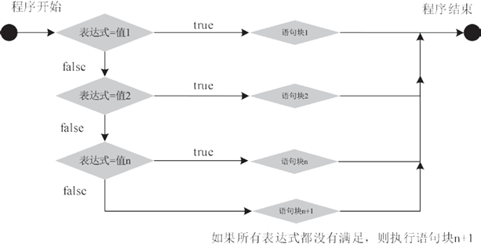

首页 > Java教程 > Java流程控制语句
Java switch case语句详解
if…else 语句可以用来描述一个“二岔路口”，我们只能选择其中一条路来继续走，然而生活中经常会碰到“多岔路口”的情况。switch 语句提供了 if 语句的一个变通形式，可以从多个语句块中选择其中的一个执行。
switch 语句的基本语法形式如下所示：
Java7 增强了 switch 语句的功能，允许 switch 语句的控制表达式是 java.lang.String 类型的变量或表达式。只能是 java.lang.String 类型，不能是 StringBuffer 或 StringBuilder 这两种字符串的类型。
例如：
如果在 case 分支语句的末尾没有 break 语句，有可能触发多个 case 分支。那么就会接着执行下一个 case 分支语句。这种情况相当危险，常常会引发错误。为此，我们在程序中从不使用 switch 语句。
如果你喜欢 switch 语句，编译代码时可以考虑加上 -Xlint:fallthrough 选项，如下所示：
switch 语句的执行过程如下：表达式的值与每个 case 语句中的常量作比较。如果发现了一个与之相匹配的，则执行该 case 语句后的代码。如果没有一个 case 常量与表达式的值相匹配，则执行 default 语句。当然，default 语句是可选的。如果没有相匹配的 case 语句，也没有 default 语句，则什么也不执行。
程序执行结果如下所示：
运行程序，输出的结果如下：
学到这里我们可以发现以下几点：
最后一点尤其有趣，因为它使我们知道 Java 编译器如何工作。当编译一个 switch 语句时，Java 编译器将检查每个 case 常量并且创造一个“跳转表”，这个表将用来在表达式值的基础上选择执行路径。因此，如果你需要在一组值中做出选择，switch 语句将比与之等效的 if-else 语句快得多。
编译器可以这样做是因为它知道 case 常量都是同类型的，所要做的只是将它与 switch 表达式相比较看是否相等。对于一系列的 if 表达式，编译器就无此功能。
一般情况下，对于判断条件较少的，可以使用 if 条件语句，但是在实现一些多条件的判断中，最好使用 switch 语句。
switch 语句格式
switch 语句是 Java 的多路分支语句。它提供了一种基于一个表达式的值来使程序执行不同部分的简单方法。因此，它提供了一个比一系列 if-else-if 语句更好的选择。switch 语句的基本语法形式如下所示：
switch(表达式) {
case 值1:
语句块1;
break;
case 值2:
语句块2;
break;
…
case 值n:
语句块n;
break;
default:
语句块n+1;
break;
}
其中，switch、case、default、break 都是 Java 的关键字。
1）switch
表示“开关”，这个开关就是 switch 关键字后面小括号里的值，小括号里要放一个整型变量或字符型变量。表达式必须为 byte，short，int，char类型。Java7 增强了 switch 语句的功能，允许 switch 语句的控制表达式是 java.lang.String 类型的变量或表达式。只能是 java.lang.String 类型，不能是 StringBuffer 或 StringBuilder 这两种字符串的类型。
2）case
表示“情况，情形”，case 标签可以是：- 类型为 char、byte、 short 或 int 的常量表达式。
- 枚举常量。
- 从 Java SE 7 开始， case 标签还可以是字符串字面量。
例如：
String input = ...;
switch (input.toLowerCase()) { // toLowerCase用于将大写字符转换为小写
case "yes":
...
break;
}
当在 switch 语句中使用枚举常量时，不必在每个标签中指明枚举名，可以由 switch 的表达式值确定。例如：
Size sz = ...;
switch (sz) {
case SMALL: // no need to use Size.SMALL
...
break;
...
}
注意：重复的 case 值是不允许的。3）default
表示“默认”，即其他情况都不满足。default 后要紧跟冒号，default 块和 case 块的先后顺序可以变动，不会影响程序执行结果。通常，default 块放在末尾，也可以省略不写。4）break
表示“停止”，即跳出当前结构。如果在 case 分支语句的末尾没有 break 语句，有可能触发多个 case 分支。那么就会接着执行下一个 case 分支语句。这种情况相当危险，常常会引发错误。为此，我们在程序中从不使用 switch 语句。
如果你喜欢 switch 语句，编译代码时可以考虑加上 -Xlint:fallthrough 选项，如下所示：
javac -Xlint:fallthrough Test.java
这样一来，如果某个分支最后缺少一个 break 语句，编译器就会给出一个警告消息。switch 语句的执行过程如下：表达式的值与每个 case 语句中的常量作比较。如果发现了一个与之相匹配的，则执行该 case 语句后的代码。如果没有一个 case 常量与表达式的值相匹配，则执行 default 语句。当然，default 语句是可选的。如果没有相匹配的 case 语句，也没有 default 语句，则什么也不执行。

图 1 switch语句执行流程图
图 1 switch语句执行流程图
例 1
在节目的抽奖环节里，节目组会根据每位嘉宾的座位号来进行抽奖游戏，根据不同的号码来决定奖项的大小。使用 switch 语句编写 Java 程序来完成奖项分配，其实现代码如下。
public static void main(String[] args) {
System.out.println("请输入座位号码：");
Scanner sc = new Scanner(System.in);
int num = sc.nextInt();
switch (num) {
case 8:
System.out.println("恭喜你，获得了三等奖！");
break;
case 88:
System.out.println("恭喜你，获得了二等奖！");
break;
case 888:
System.out.println("恭喜你，获得了一等奖！");
break;
default:
System.out.println("谢谢参与！");
break;
}
}
当用户输入的号码为 888 时，获取的 num 值为 888，则与第三个 case 后的值匹配，执行它后面的语句，输出“恭喜你，获得了一等奖！”，然后执行 break 语句，跳出整个 switch 结构。如果输入的号码与 case 中的值都不匹配，则执行 default 后的语句。程序执行结果如下所示：
请输入座位号码： 888 恭喜你，获得了一等奖！
请输入座位号码： 88 恭喜你，获得了二等奖！
请输入座位号码： 66 谢谢参与！
例 2
编写一个 Java 程序，根据当前的星期数字输出对应的汉字。在这里使用包含 break 的 switch 语句来判断当前的星期，实现代码如下：
public static void main(String[] args) {
String weekDate = "";
Calendar calendar = Calendar.getInstance(); // 获取当前时间
int week = calendar.get(Calendar.DAY_OF_WEEK) - 1; // 获取星期的第几日
switch (week) {
case 0:
weekDate = "星期日";
break;
case 1:
weekDate = "星期一";
break;
case 2:
weekDate = "星期二";
break;
case 3:
weekDate = "星期三";
break;
case 4:
weekDate = "星期四";
break;
case 5:
weekDate = "星期五";
break;
case 6:
weekDate = "星期六";
break;
}
System.out.println("今天是 " + weekDate);
}
本程序首先获取当前的星期值，然后使用 switch 语句判断 week 的值：0 表示星期日，1 表示星期一，2 表示星期二……以此类推，6 表示星期六。只要 week 值与 case 值相符合，则程序将执行该 case 中的语句，并跳出 switch 语句，输出结果。运行程序，输出的结果如下：
今天是星期五
嵌套 switch 语句
可以将一个 switch 语句作为一个外部 switch 语句的语句序列的一部分，这称为嵌套 switch 语句。因为一个 switch 语句定义了自己的块，外部 switch 语句和内部 switch 语句的 case 常量不会产生冲突。例如，下面的程序段是完全正确的：
public static void main(String[] args) {
switch (count) {
case 1:
switch (target) {
case 0:
System.out.println("target is zero");
break;
case 1:
System.out.println("target is one");
break;
}
break;
case 2: // ...
}
}
本例中，内部 switch 语句中的case 1：语句与外部 switch 语句中的case 1：语句不冲突。变量 count 仅与外层的 case 语句相比较。如果变量 count 为 1，则变量 target 与内层的 case 语句相比较。学到这里我们可以发现以下几点：
- switch 语句不同于 if 语句的是 switch 语句仅能测试相等的情况，而 if 语句可计算任何类型的布尔表达式。也就是 switch 语句只能寻找 case 常量间某个值与表达式的值相匹配。
- 在同一个 switch 语句中没有两个相同的 case 常量。当然，外部 switch 语句中的 case 常量可以和内部 switch 语句中的 case 常量相同。
- switch 语句通常比一系列嵌套 if 语句更有效。
最后一点尤其有趣，因为它使我们知道 Java 编译器如何工作。当编译一个 switch 语句时，Java 编译器将检查每个 case 常量并且创造一个“跳转表”，这个表将用来在表达式值的基础上选择执行路径。因此，如果你需要在一组值中做出选择，switch 语句将比与之等效的 if-else 语句快得多。
编译器可以这样做是因为它知道 case 常量都是同类型的，所要做的只是将它与 switch 表达式相比较看是否相等。对于一系列的 if 表达式，编译器就无此功能。
if 语句和 switch 语句的区别
if 和 switch 语句都表示条件语句，可以从使用效率和实用性两方面加以区分。1. 从使用效率上区分
从使用效率上区分，在对同一个变量的不同值作条件判断时，既可以使用 switch 语句，也可以使用 if 语句。使用 switch 语句的效率更高一些，尤其是判断的分支越多，越明显。2. 从实用性上区分
从语句的实用性角度区分，switch 语句不如 if 条件语句，if 语句是应用最广泛和最实用的语句。3. 何时使用 if 语句和 switch 语句
在程序开发的过程中，何时使用 if 语句和 switch 语句，需要根据实际情况而定，应尽量做到物尽其用。不能因为 switch 语句的效率高就一直使用，也不能因为 if 语句常用就不用 switch 语句。需要根据实际情况，具体问题具体分析，使用最适合的条件语句。一般情况下，对于判断条件较少的，可以使用 if 条件语句，但是在实现一些多条件的判断中，最好使用 switch 语句。
关注公众号「站长严长生」，在手机上阅读所有教程，随时随地都能学习。内含一款搜索神器，免费下载全网书籍和视频。

微信扫码关注公众号